室町時代と中世の世界
 いっしょに
いっしょに読もう！
モンゴル帝国
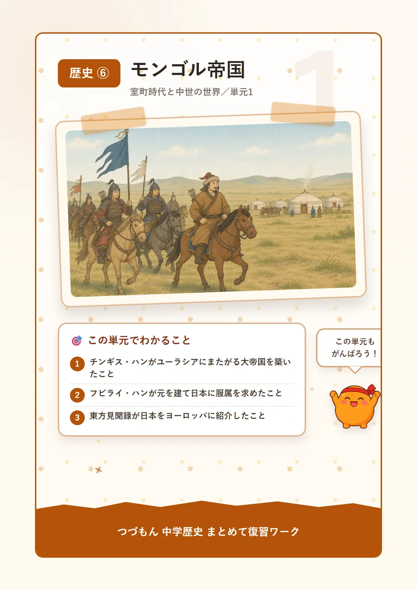
1チンギス・ハンとモンゴル帝国の建国
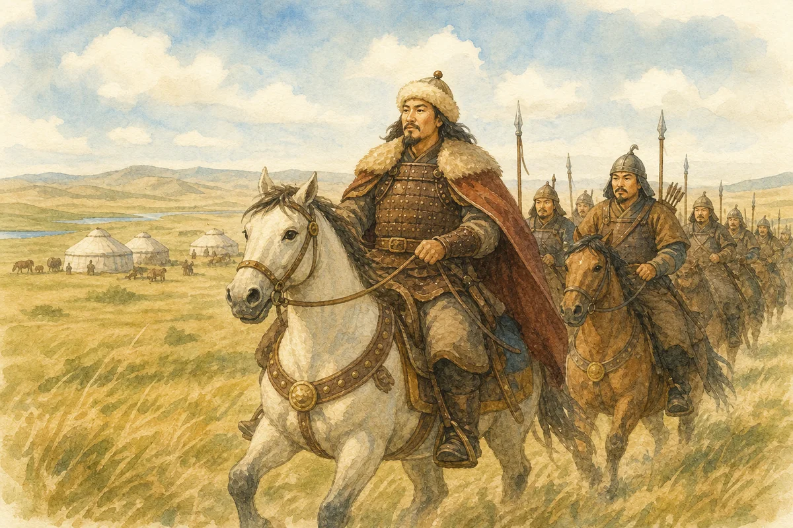
13世紀の初め、チンギス・ハンはモンゴル高原の遊牧民たちをまとめ上げ、機動力にすぐれた騎馬軍を率いて周辺地域を次々に征服していったんだ。そうしてユーラシア大陸にまたがるモンゴル帝国を築き上げたんだよ。帝国は征服した地域の宗教や言語をそのまま認める柔軟な統治をしていて、無理に同化させるようなことはしなかったんだ。この方針こそ、多様な民族や文化を抱える広大な帝国をまとめる知恵だったといえるね。
2フビライ・ハンと元・日本への服属要求
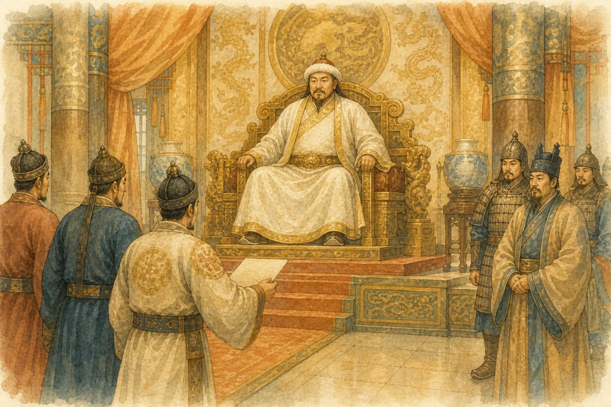
チンギス・ハンの孫にあたるフビライ・ハンは、国号を元と定めて、大都(現在の北京)に都を置いたんだ。元は朝鮮半島の高麗を従えたうえで、日本にも使者を送って貿易と朝貢(服属)を求めてきたんだよ。この要求を鎌倉幕府が拒んだことが、のちの元寇につながっていくんだ。
3マルコ・ポーロと東西交流の広がり
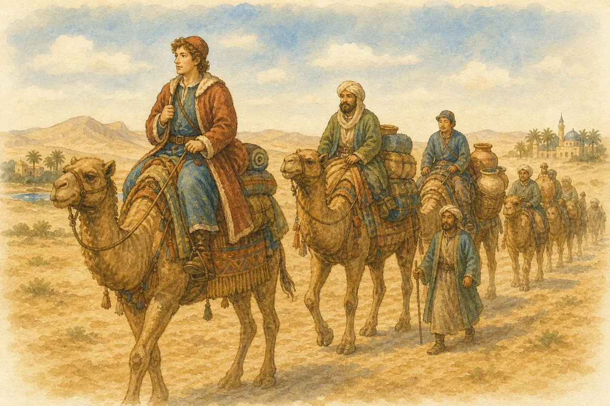
元に仕えたイタリア人のマルコ・ポーロは、自分の見聞をもとに『東方見聞録』(世界の記述)を書き、実際には訪れていない日本を「黄金の国ジパング」としてヨーロッパに紹介したんだ。この書物がアジアへの関心を高め、のちのヨーロッパの大航海時代へとつながっていったんだよ。また、アラビア半島やインドを結ぶ海の交易ではムスリム商人が活躍していて、モンゴル帝国が13世紀末に分裂したあとのトルコにはオスマン帝国が成立したんだ。

元寇と鎌倉幕府の滅亡
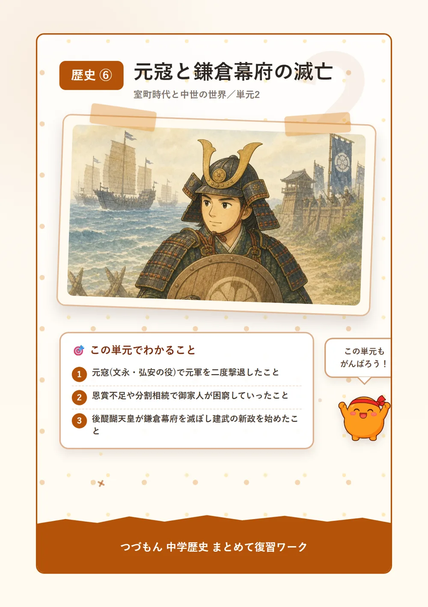
1元寇 - 文永の役と弘安の役
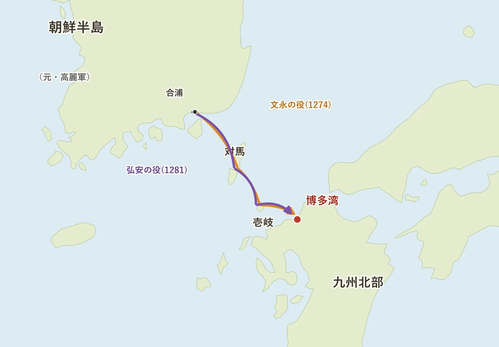
フビライ・ハンの服属要求を鎌倉幕府の第8代執権北条時宗が拒むと、元は1274年の文永の役、1281年の弘安の役と二度にわたって日本を攻めてきたんだ(合わせて元寇というよ)。元軍は集団戦法や火薬を使ったてつはうで武士を苦しめたけれど、時宗が博多湾に築かせた石塁や暴風雨もあって、日本は二度とも撃退に成功したんだよ。
2御家人の窮乏と幕府の衰え
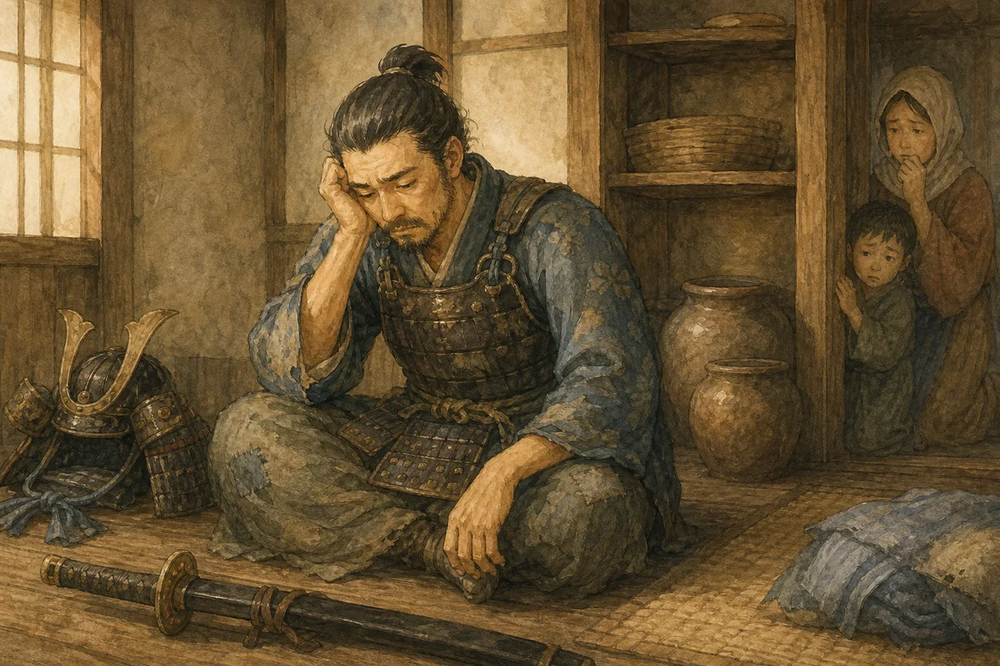
元寇で戦った御家人は、十分な恩賞をもらえなかったうえに、分割相続によって代々領地が細分化されて、生活がどんどん苦しくなっていったんだ。幕府は1297年に永仁の徳政令を出して借金の帳消しを認めたけれど、効果は一時的なものにとどまってしまったんだよ。荘園領主や幕府の命令に従わない悪党と呼ばれる新しい武士も現れて、幕府の力は次第に弱まっていったんだ。
3鎌倉幕府の滅亡と建武の新政
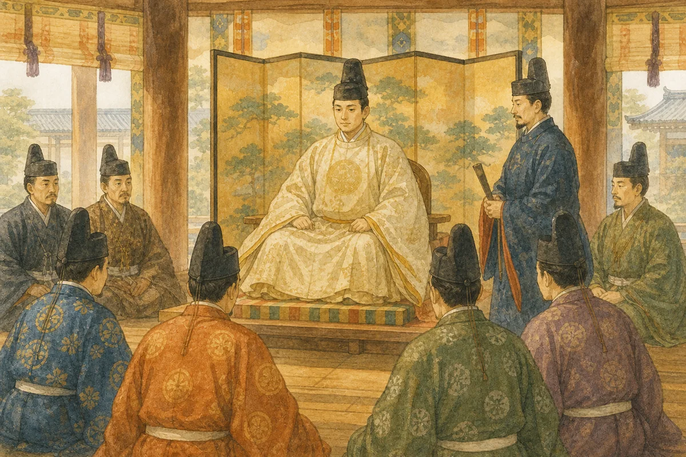
御家人の不満が高まるなか、後醍醐天皇は足利尊氏や新田義貞らの協力を得て挙兵し、1333年、約150年続いた鎌倉幕府を滅ぼしたんだ。翌1334年、後醍醐天皇は天皇中心の政治である建武の新政を始めたけれど、貴族ばかりを優遇して武士の功績を認めなかったから武士の不満を招いてしまい、わずか約2年で崩れることになったんだよ。
室町幕府の成立
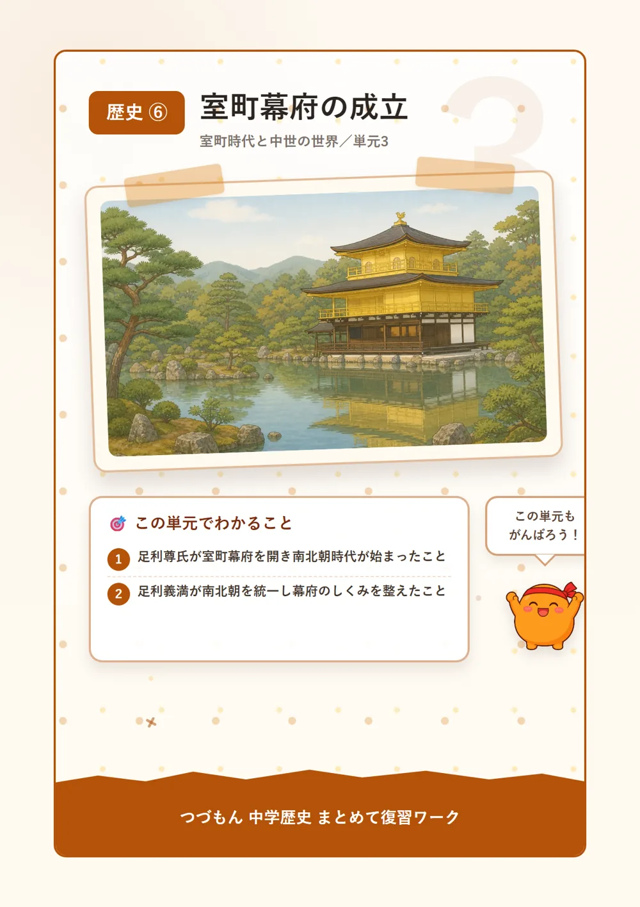
1室町幕府の成立と南北朝の対立
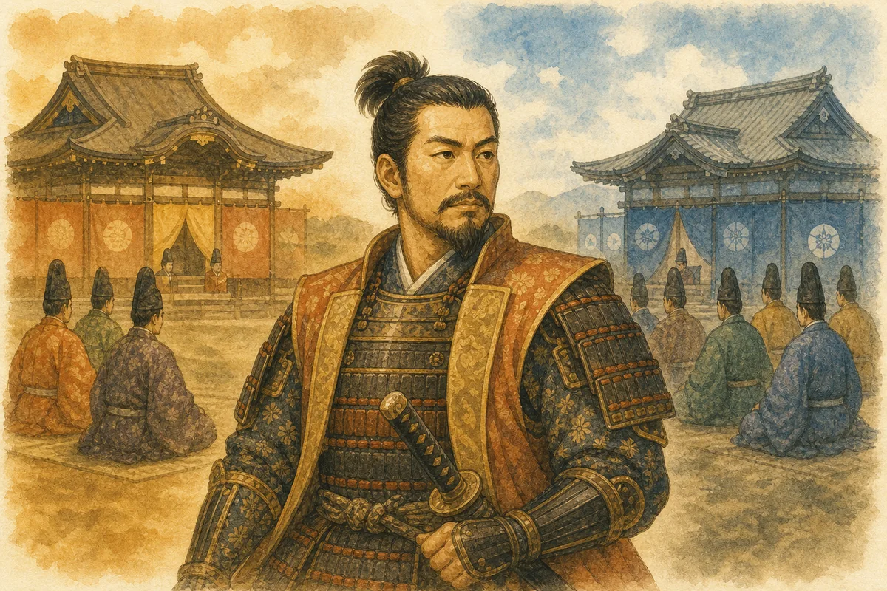
建武の新政が武士の不満を招いて崩れると、足利尊氏は1338年に征夷大将軍となって、京都に室町幕府を開いたんだ。このころ、京都の北朝と、後醍醐天皇が吉野(奈良県)に開いた南朝が対立する南北朝時代が始まり、約60年にもわたって二つの朝廷が並び立つ状態が続いたんだよ。
2足利義満と幕府のしくみ
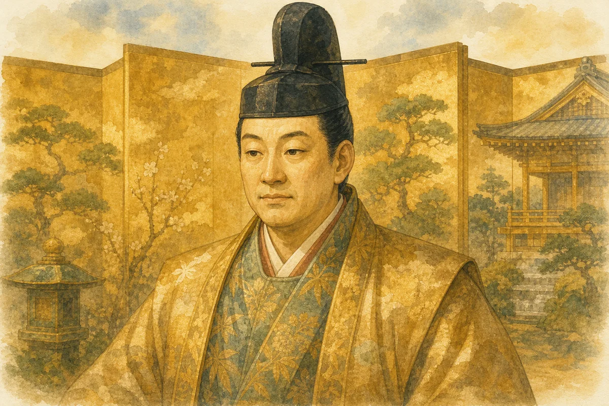
第3代将軍足利義満は1392年に南北朝を統一し、京都の室町に建てた花の御所で政治を行って、幕府の全盛期を築き上げたんだ。幕府では将軍を補佐する管領に細川・斯波・畠山の三家が交代でついていて、地方では守護大名が国内の武士をまとめて一国を支配する力を強めていったんだよ。京都で金融業を営む土倉や酒屋は、幕府に税を納める大事な財源になったんだ。
東アジアとの交流
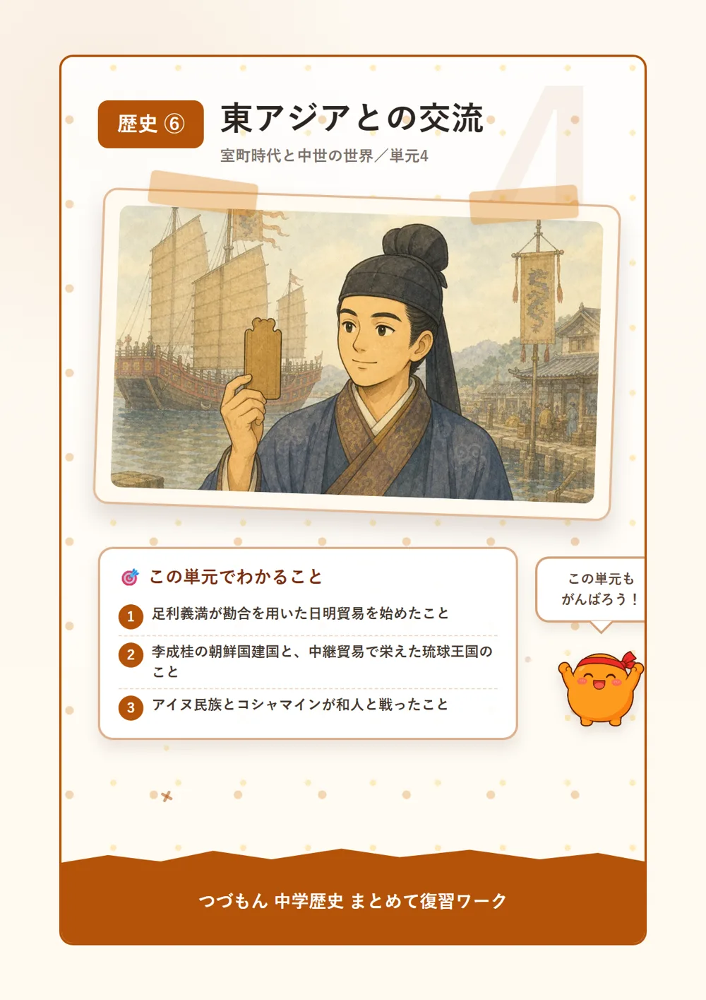
1日明貿易と勘合
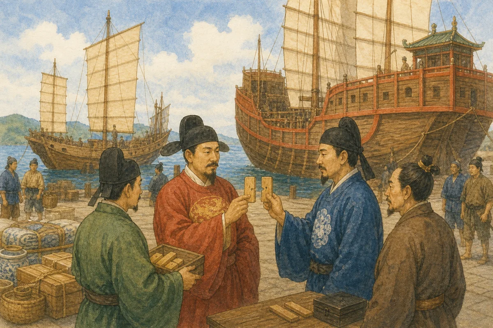
14世紀ごろ、朝鮮や中国の沿岸を倭寇と呼ばれる海賊が襲うようになると、足利義満は倭寇を取り締まる一方で、明との日明貿易(勘合貿易)を始めたんだ。正式な貿易船と倭寇を区別するために勘合という証明書(割札)が使われ、中国の皇帝に貢ぎ物を差し出す朝貢貿易という形がとられたんだよ。
2朝鮮国と琉球王国の成立
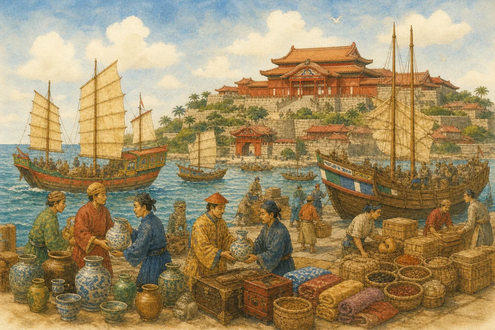
日明貿易が始まったのと同じ1392年、朝鮮半島では李成桂が高麗を滅ぼして朝鮮国を建てたんだ。のちに独自の文字であるハングルも作られたんだよ。一方、沖縄では尚氏が沖縄島を統一して琉球王国を建て、首里を都に日本・中国・朝鮮・東南アジアを結ぶ中継貿易で栄えたんだ。
3蝦夷地のアイヌ民族との関わり
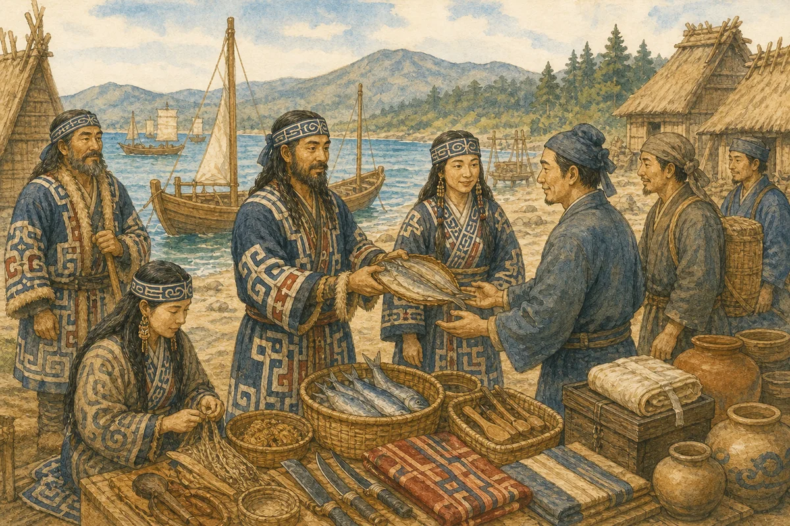
北の蝦夷地(今の北海道)では、古くからアイヌ民族が狩りや漁、交易をしながら暮らしていたんだ。しかし和人との交易をめぐる対立が深まっていき、1457年には首長コシャマインがアイヌを率いて和人と戦う出来事が起こったんだよ。
室町時代の産業
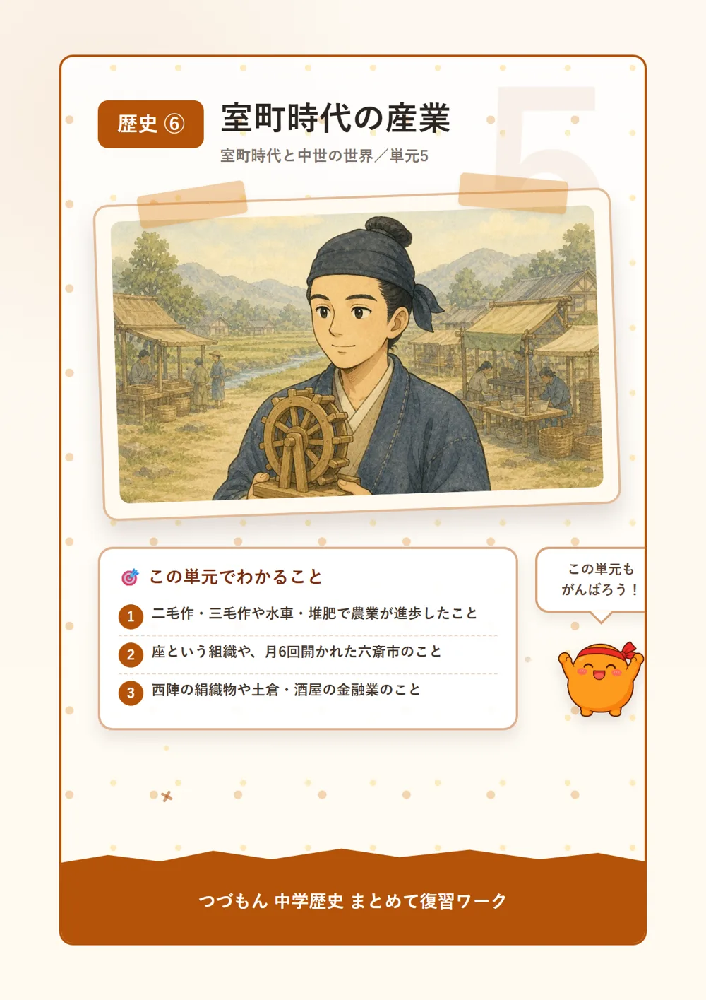
1農業技術の進歩
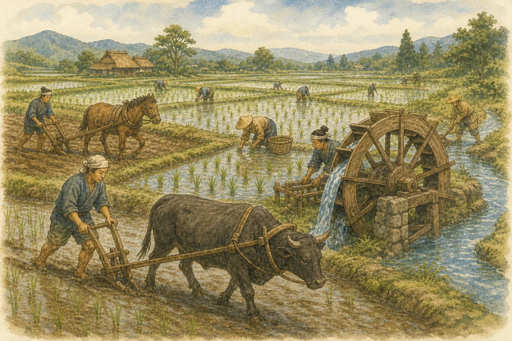
室町時代には、同じ土地で年に2回作物を作る二毛作がさらに広まっていって、温暖な地域では年3回作る三毛作も行われるようになったんだ。かんがいには水車が使われ、牛馬の糞から作る堆肥も普及して収穫量を高めていったんだよ。また、麻・桑・茶・漆など、市場で売るための商品作物の栽培も増えていったんだ。
2商業と流通の発展
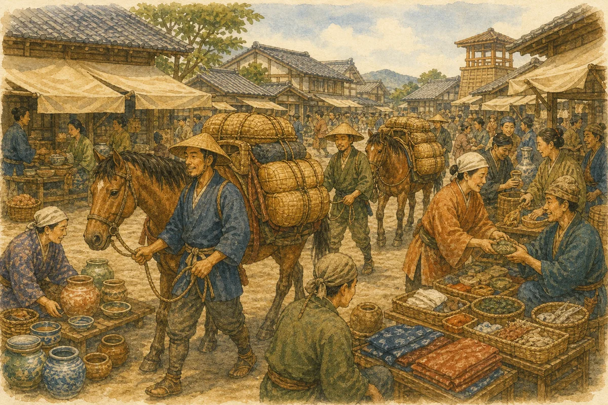
物資の輸送は馬を使う馬借や、港で保管・運送を兼ねる問が担っていたんだ。商工業者は同業者組織である座をつくり、寺社の保護のもとで営業を独占したんだよ。定期市は鎌倉時代の月3回から室町時代には月6回の六斎市に増えていって、中国から輸入された宋銭や明銭が広く使われたんだ。
3手工業と金融業の発展
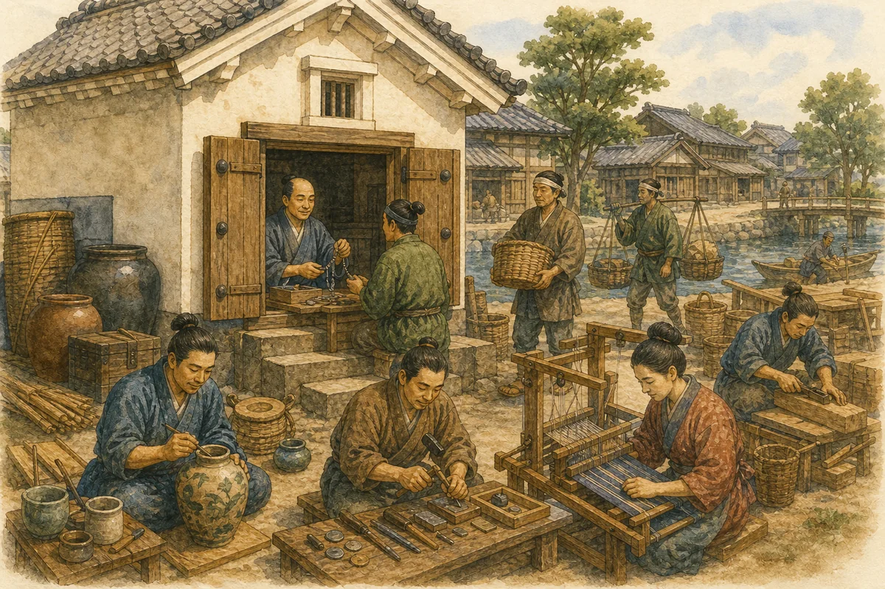
桑の栽培が広がると、生糸を得る養蚕業の発展と結びついて、京都の西陣や博多では絹織物の生産が盛んになっていったんだ。都市では土倉や酒屋といった金融業者が現れ、質物を取って金を貸す土倉は、幕府に税を納める代わりに保護を受けていたんだよ。
室町時代の民衆
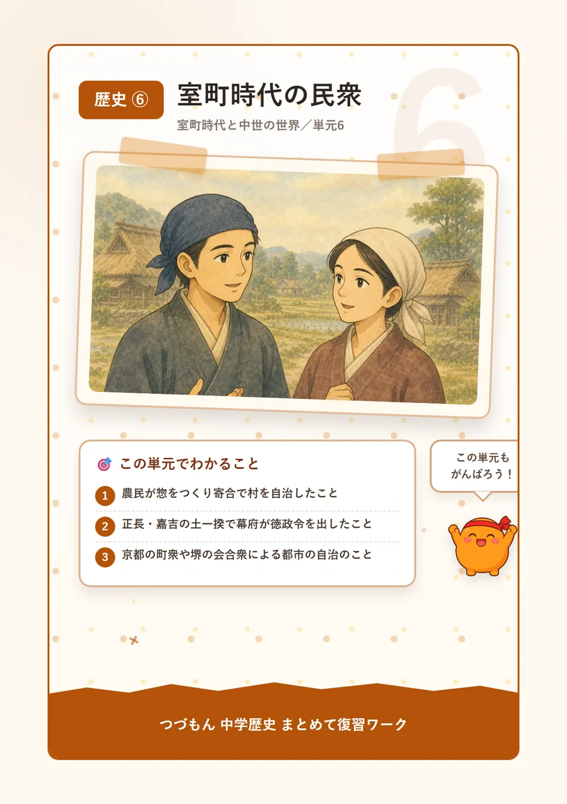
1惣の自治と寄合
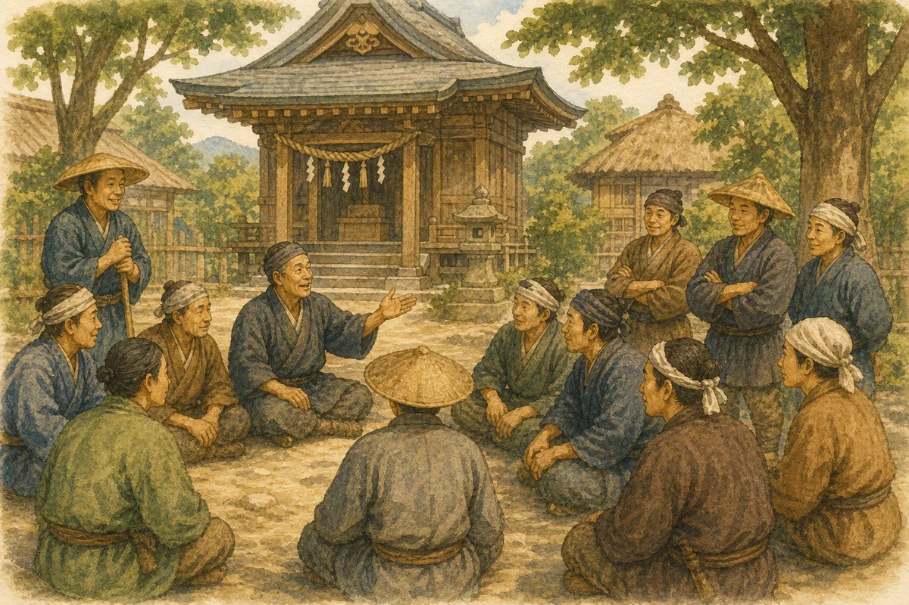
村では有力な農民を中心に惣という自治組織がつくられて、村人は寄合で話し合い、おきてを定めて村を運営していったんだ。共同で利用する山林である入会地の管理も、惣が担った仕事の一つだったんだよ。
2土一揆の広がり
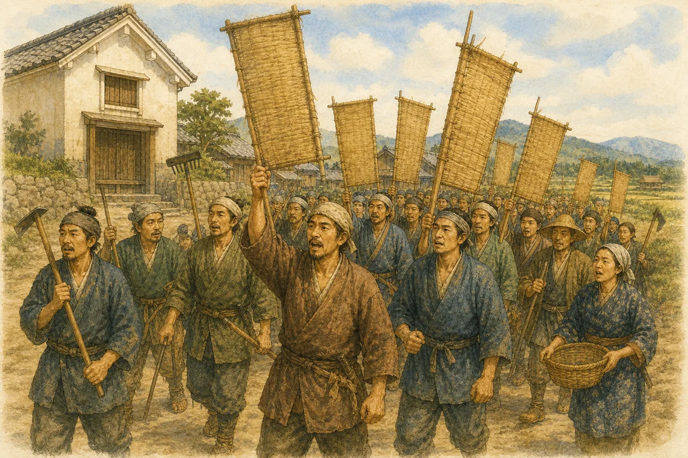
1428年には近畿地方で日本最初の大規模な土一揆である正長の土一揆が起こって、農民や馬借が土倉や酒屋を襲い、借金の帳消しを求めたんだ。1441年の嘉吉の土一揆では、幕府が初めて徳政令を出し、農民の要求に応じたんだよ。
3都市の自治
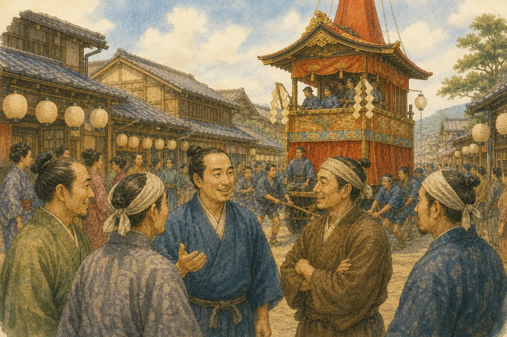
京都では応仁の乱で荒れた町を町衆が復興させて、中断していた祇園祭を復活させたんだ。港町の堺では有力商人による会合衆が合議制で自治を行っていて、周りに濠をめぐらせた自由都市として知られ、博多でも年行司が自治を担っていたんだよ。
北山文化と能楽
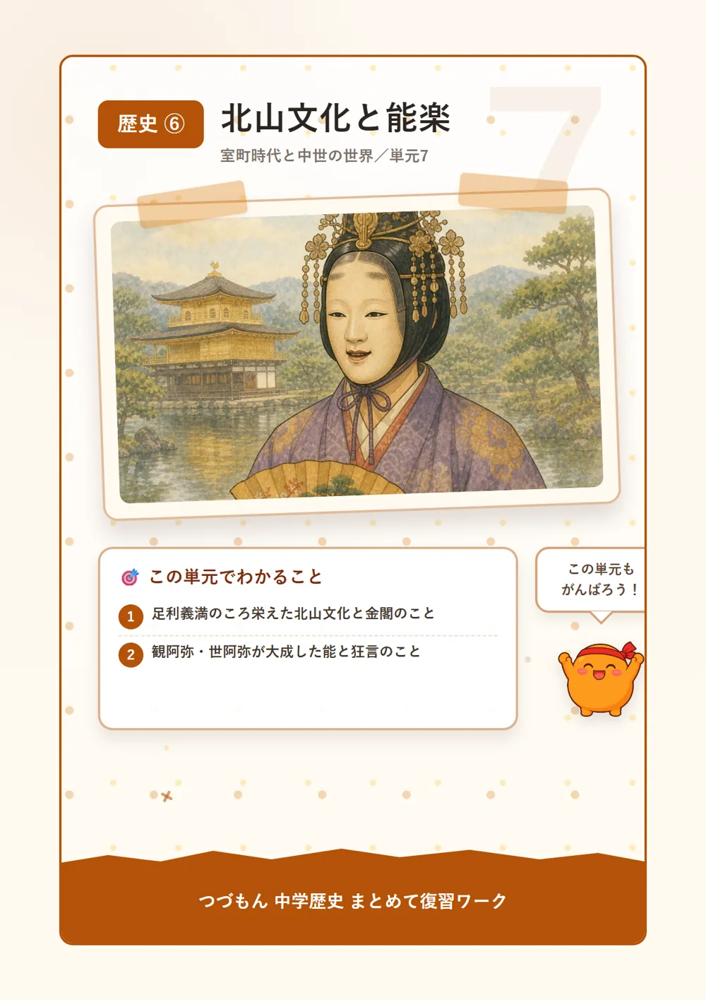
1足利義満と金閣
室町幕府第3代将軍足利義満のころ栄えた北山文化は、日明貿易による大きな富を背景に、公家と武家の文化が融合した華やかな文化なんだ。義満が京都の北山に建てた金閣は、1層が寝殿造、2層が武家造、3層が禅宗様という三つの様式からなっていて、正式には鹿苑寺というんだよ。
2能と狂言の大成
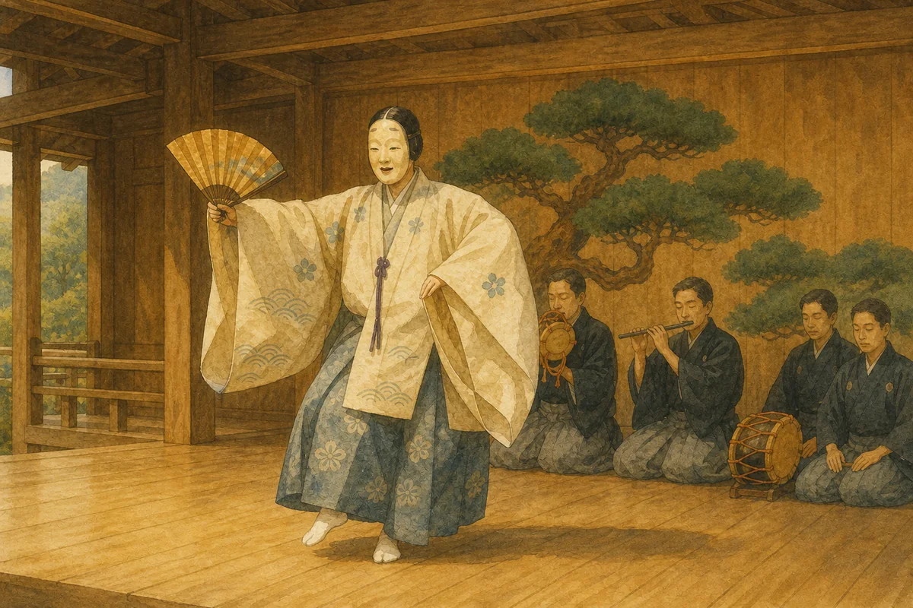
芸能では、猿楽をもとに観阿弥・世阿弥の親子が能を大成して、義満の保護を受けて発展していったんだ。能の合間には庶民の日常をこっけいに描く狂言が演じられて、能とあわせて楽しまれていたんだよ。
東山文化と民衆の文化
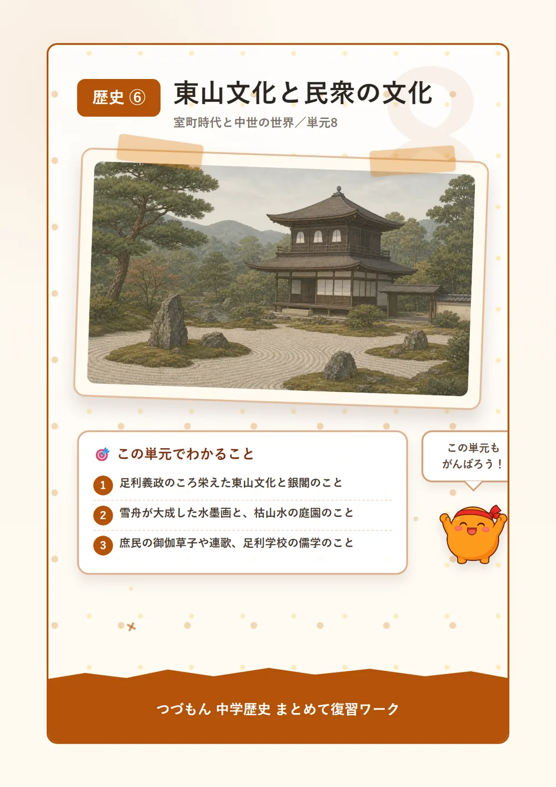
1足利義政と銀閣・書院造
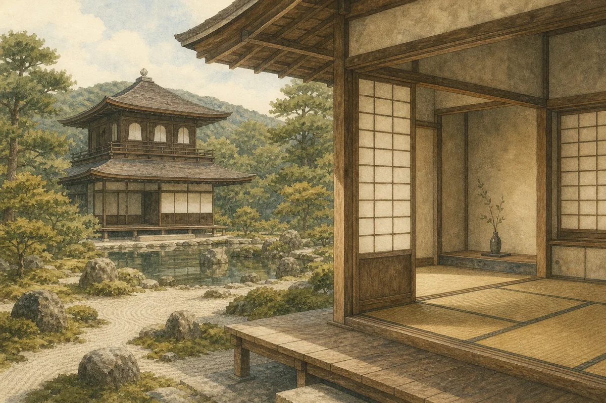
室町幕府第8代将軍足利義政のころ栄えた東山文化は、禅宗の影響を受けた簡素で落ち着いた美しさが特徴なんだ。義政が京都の東山に建てた銀閣は正式には慈照寺といって、畳や床の間を備えた書院造は現在の和風住宅のもとになったんだよ。
2水墨画と枯山水
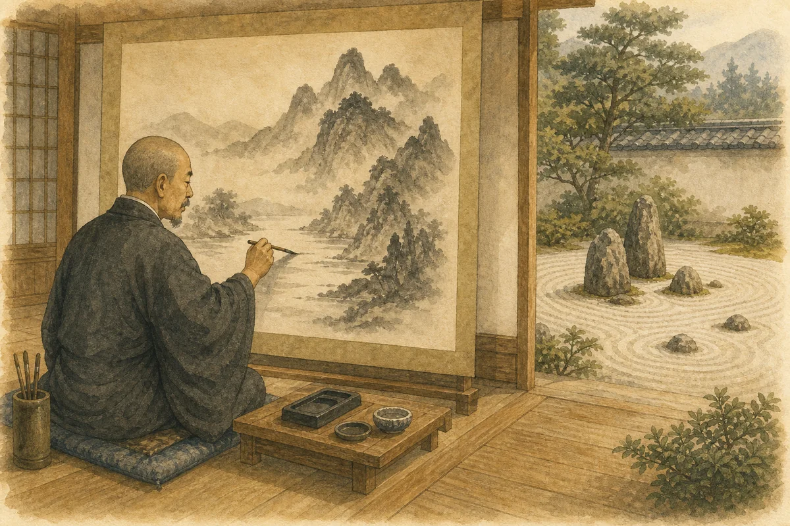
絵画では、明に渡って学んだ雪舟が水墨画を大成して、庭園では石や砂で山水を表す枯山水が作られたんだ。生活文化では、わびの心を大切にする茶の湯や生け花が始まり、のちにそれぞれ茶道・華道として発展していったんだよ。
3民衆に広がる文芸と学問
文芸では複数人で句を詠み継ぐ連歌や、庶民に親しまれた御伽草子が広まっていったんだ。学問では、栃木県の足利学校に全国から人が集まって儒学が学ばれていて、都だけでなく地方にも文化や学問が広がっていったことがわかるね。